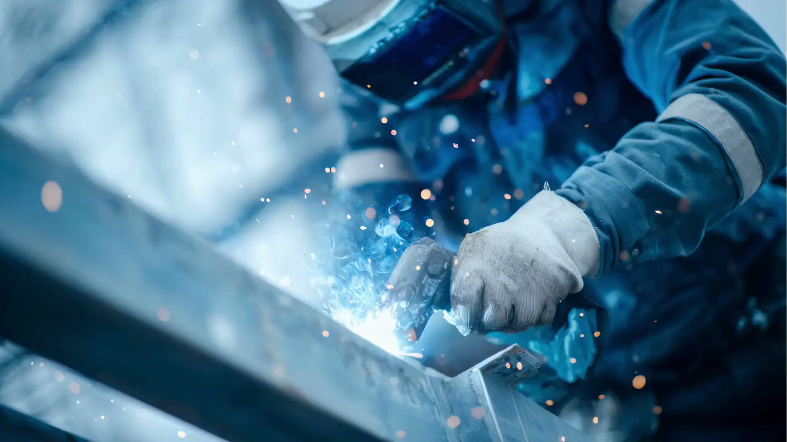
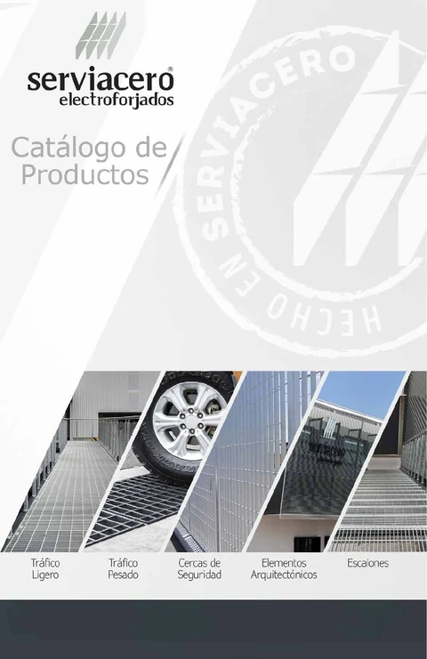
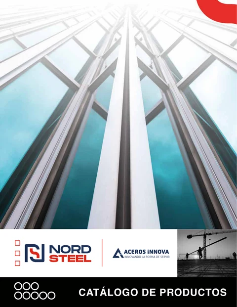
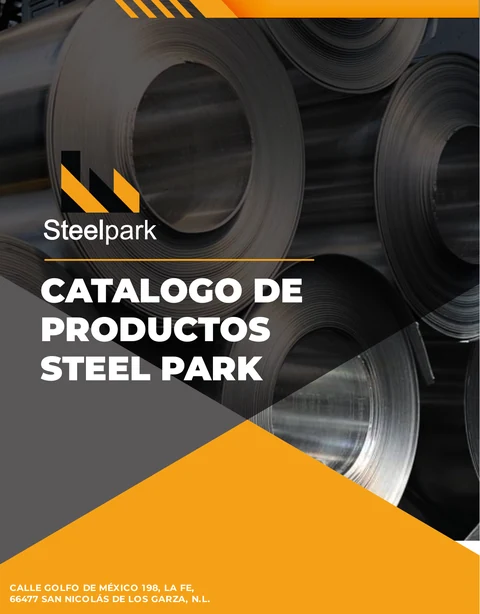
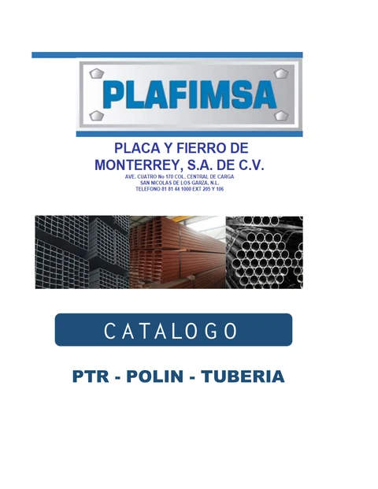
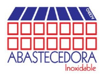
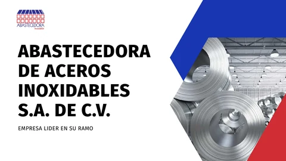

Consulta con nuestro equipo los productos y el catálogo de Villacero para Perfiles.
Consultar catálogo →
Catálogos AINSA
Encuentra materiales para tu próximo proyecto.
Explora nuestros catálogos por especialidad y proveedor.
Explorar catálogosExplora por especialidad
01
Acero
Perfiles, láminas y placas
Explorar área →02Válvulas
Miller · Worcester · Emsa
Explorar área →03Tuberías
Conducción industrial
Explorar área →04Conexiones
Soluciones para tus instalaciones
Explorar área →05Ferretería
Truper · Milwaukee · Urrea
Explorar área →06Tubería contra incendio
Emsa
Explorar área →01 / Área industrial
ACERO
Explora por presentación y tipo de acero.
Perfiles
Acero al carbón
Productos del catálogo AINSA
PTR Cuadrado
Resistencia, estabilidad y facilidad de fabricación.
PTR Rectangular
Rigidez direccional para aplicaciones industriales y estructurales.
HSS Cuadrado
Alta resistencia mecánica y uniformidad dimensional.
HSS Rectangular
Eficiencia estructural y distribución de cargas.
Varilla corrugada
Refuerzo de acero al carbón para estructuras de concreto.
Castillos electrosoldados
Elemento prefabricado para muros y castillos de concreto.
Alambres
Flexibilidad y resistencia para amarre, refuerzo y sujeción.
Telas electrosoldadas
Distribución uniforme de cargas en losas y pavimentos.
Ángulos lados iguales
Sección en L para marcos, soportes y refuerzos.
Ángulos lados desiguales
Adaptabilidad estructural y optimización de carga.
Soleras
Sección plana rectangular para fabricación y construcción.
Perfiles estructurales
Soporte y distribución de cargas para construcción industrial.
Perfiles tubulares
Rigidez, ligereza y facilidad de fabricación.
Polines
Para cubiertas, techumbres y estructuras ligeras.
Vigas IPR
Altas cargas y grandes claros en estructuras metálicas.
Vigas IPS
Patín estándar para marcos y sistemas estructurales.
Cold Rolled 1018 y 1045 / 12L14
Redondos de precisión para maquinado y fabricación.
Acero inoxidable
Catálogos de acero inoxidable
Consulta perfiles, láminas y placas en la documentación de Integrinox y Abinox.
Integrinox PDF → Abinox PPSX →Láminas y placas
Acero al carbón
Consulta con nuestro equipo los productos y el catálogo de Villacero para Láminas y placas.
Consultar catálogo →Productos del catálogo AINSA
Lámina rolada en frío
Acabado uniforme y precisión dimensional.
Lámina rolada en caliente
Resistencia y robustez para fabricación.
Placa de rollo
Placa plana adaptable a procesos de fabricación.
Lámina y placa antiderrapante
Tracción para pisos, rampas, escaleras y plataformas.
Placa de grado
Grados estructurales para aplicaciones de alta exigencia.
Acero inoxidable
Catálogos de acero inoxidable
Consulta perfiles, láminas y placas en la documentación de Integrinox y Abinox.
Integrinox PDF → Abinox PPSX →Catálogos de proveedores
Documentación de referencia. Confirma disponibilidad y especificaciones con AINSA.
Acero · Ferretería
Serviacero Electroforjados

Ver catálogo ↗Rejillas, escalones, cercas y sujetadores.
Descargar PDF ↓Acero · Tuberías · Conexiones · Válvulas
Integrinox
Ver catálogo ↗Láminas, placas, perfiles, tubería, conexiones y válvulas de acero inoxidable.
Descargar PDF ↓Acero · Tuberías · Ferretería
Aceros Innova / Nord Steel

Ver catálogo ↗Perfiles, láminas, tubería y ferretería.
Descargar PDF ↓Acero · Tuberías
Steelpark

Ver catálogo ↗PTR, HSS, perfiles, láminas, placas, vigas y tubería.
Descargar PDF ↓Tuberías · Acero
Plafimsa

Ver catálogo ↗PTR, polín estructural C y tubería mecánica.
Descargar PDF ↓Acero · Tuberías · Ferretería
Chulavista
Documento originalVer catálogo PDF ↗Perfiles, láminas, placas, tubería y herrajes.
Descargar PDF ↓Acero · Tuberías · Conexiones · Válvulas
Abinox


Descargar presentación ↓Presentación de acero inoxidable, perfiles, láminas, tubería, conexiones y válvulas.
Descargar PPSX ↓Presentación PowerPoint; requiere una aplicación compatible.
02 / Área industrial
VÁLVULAS
Consulta productos y documentación con el proveedor adecuado.
Miller
Consulta con nuestro equipo los productos y el catálogo de Miller para válvulas.
Consultar catálogo →Worcester
Consulta con nuestro equipo los productos y el catálogo de Worcester para válvulas.
Consultar catálogo →Emsa
Consulta con nuestro equipo los productos y el catálogo de Emsa para válvulas.
Consultar catálogo →Catálogos de proveedores
Documentación de referencia. Confirma disponibilidad y especificaciones con AINSA.
Acero · Tuberías · Conexiones · Válvulas
Integrinox
Ver catálogo ↗Láminas, placas, perfiles, tubería, conexiones y válvulas de acero inoxidable.
Descargar PDF ↓Acero · Tuberías · Conexiones · Válvulas
Abinox
Descargar presentación ↓Presentación de acero inoxidable, perfiles, láminas, tubería, conexiones y válvulas.
Descargar PPSX ↓Presentación PowerPoint; requiere una aplicación compatible.
03 / Área industrial
TUBERÍAS
Catálogo AINSA / Tubería industrial
Tubo Cédula 30
Espesor intermedio para instalaciones y estructuras ligeras.
Tubo Cédula 40
Mayor espesor para aplicaciones de alta resistencia.
Diámetros mayores
Conducción industrial e infraestructura a gran escala.
Tubería industrial
Procesos productivos y sistemas industriales.
Tuberías plásticas
Información de catálogo en actualización
Consulta con nuestro equipo las opciones y especificaciones para tu proyecto.
Solicitar información →Catálogos de proveedores
Documentación de referencia. Confirma disponibilidad y especificaciones con AINSA.
Acero · Tuberías · Conexiones · Válvulas
Integrinox
Ver catálogo ↗Láminas, placas, perfiles, tubería, conexiones y válvulas de acero inoxidable.
Descargar PDF ↓Acero · Tuberías · Ferretería
Aceros Innova / Nord Steel
Ver catálogo ↗Perfiles, láminas, tubería y ferretería.
Descargar PDF ↓Acero · Tuberías
Steelpark
Ver catálogo ↗PTR, HSS, perfiles, láminas, placas, vigas y tubería.
Descargar PDF ↓Tuberías · Acero
Plafimsa
Ver catálogo ↗PTR, polín estructural C y tubería mecánica.
Descargar PDF ↓Acero · Tuberías · Ferretería
Chulavista
Documento originalVer catálogo PDF ↗Perfiles, láminas, placas, tubería y herrajes.
Descargar PDF ↓Acero · Tuberías · Conexiones · Válvulas
Abinox
Descargar presentación ↓Presentación de acero inoxidable, perfiles, láminas, tubería, conexiones y válvulas.
Descargar PPSX ↓Presentación PowerPoint; requiere una aplicación compatible.
04 / Área industrial
CONEXIONES
Asesoría para seleccionar la conexión adecuada a tu instalación.
Asesoría para tu proyecto
Consulta con nuestro equipo las opciones y especificaciones para tu proyecto.
Solicitar información →Catálogos de proveedores
Documentación de referencia. Confirma disponibilidad y especificaciones con AINSA.
Acero · Tuberías · Conexiones · Válvulas
Integrinox
Ver catálogo ↗Láminas, placas, perfiles, tubería, conexiones y válvulas de acero inoxidable.
Descargar PDF ↓Acero · Tuberías · Conexiones · Válvulas
Abinox
Descargar presentación ↓Presentación de acero inoxidable, perfiles, láminas, tubería, conexiones y válvulas.
Descargar PPSX ↓Presentación PowerPoint; requiere una aplicación compatible.
05 / Área industrial
FERRETERÍA
Herramientas y suministro para el trabajo industrial.
Consulta con nuestro equipo los productos y el catálogo de Truper para ferretería.
Consultar catálogo →Consulta con nuestro equipo los productos y el catálogo de Milwaukee para ferretería.
Consultar catálogo →Consulta con nuestro equipo los productos y el catálogo de Urrea para ferretería.
Consultar catálogo →Catálogos de proveedores
Documentación de referencia. Confirma disponibilidad y especificaciones con AINSA.
Acero · Ferretería
Serviacero Electroforjados
Ver catálogo ↗Rejillas, escalones, cercas y sujetadores.
Descargar PDF ↓Acero · Tuberías · Ferretería
Aceros Innova / Nord Steel
Ver catálogo ↗Perfiles, láminas, tubería y ferretería.
Descargar PDF ↓Acero · Tuberías · Ferretería
Chulavista
Documento originalVer catálogo PDF ↗Perfiles, láminas, placas, tubería y herrajes.
Descargar PDF ↓06 / Área industrial
TUBERÍA CONTRA INCENDIO
Consulta el catálogo y las especificaciones aplicables a tu proyecto.
Emsa
Consulta con nuestro equipo los productos y el catálogo de Emsa para tubería contra incendio.
Consultar catálogo →Consulta técnica
CATÁLOGO GENERAL AINSA
Conserva a la mano las medidas y tablas técnicas del catálogo general.
Ver catálogos →